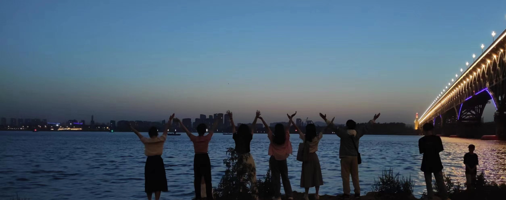

旅行
文明犹如缤纷多彩的丝线，广袤河山仿佛从未停歇的织机，在东风和西风的吹拂下编织至今。 看到外面的世界，想象外面的世界，而后走向外面的世界。
我们自由地呼吸着，要去西藏新疆要去青海长沙，要在沿海公路上骑着电瓶喝汽水，要在落日下的橘子海边偷偷喝醉…… 生活不是一场赛跑，生活是一场旅行，要懂得好好欣赏每一段的风景。
汪曾祺曾说：“一定要爱着点什么，恰似草木对光阴的钟情。一定要爱着点什么，它让我们变得坚韧，宽容,充盈。”
文明犹如缤纷多彩的丝线，广袤河山仿佛从未停歇的织机，在东风和西风的吹拂下编织至今。 看到外面的世界，想象外面的世界，而后走向外面的世界。
我们自由地呼吸着，要去西藏新疆要去青海长沙，要在沿海公路上骑着电瓶喝汽水，要在落日下的橘子海边偷偷喝醉…… 生活不是一场赛跑，生活是一场旅行，要懂得好好欣赏每一段的风景。
| 城市 | 一句话描绘他 | 记下最难忘的吧 | 城市 | 一句话描绘他 | 记下最难忘的吧 |
|---|---|---|---|---|---|
| 桂林 | 山水甲天下 | 儿时的乐园——乐满地 | 上海 | 滚滚红尘，十里洋场 | 放眼世界——世博会 |
| 北京 | 一朝尘尽光生，照破山河万朵 | 故宫的盛大、胡同的悠远、升旗的庄严 | 苏州 | 人家尽枕河，水巷小桥多 | 园林深深 |
| 岳阳 | 洞庭天下水，岳阳天下楼 | 岳阳楼与洞庭鱼 | 张家界 | 仙境张家界，惊艳全世界 | 玻璃栈道 |
| 杭州 | 江南忆，最忆是杭州 | 欲把西湖比西子 | 贵州 | 上关风，下关花，荔湾水，苗家月 | 千户苗寨的万家灯火 |
| 北海 | 和你去海边 | 玩水自由 | 青海 | 一座高原，五百山水，三千佛唱 | 广袤的土地、纯净的天空、虔诚的信仰 |
| 南宁 | 百越有桂宜吃食 | 水果自由 | 敦煌 | 月牙湾下的泪光，在丝路之上被遗忘 | 神秘的沙漠、奇妙的洞窟 |
| 长沙 | 湘遇在星城，相遇在未来 | 火热的天气、吃食和心情 | 西安 | 举目见日，不见长安 | 磅礴的兵马俑、华贵的华清池、方正的古城墙 |
| 开封 | 大宋风华，豫见汴梁 | 历史与乐趣——清明上河园 | 洛阳 | 若问古今兴废事，请君只看洛阳城 | 神秘与庄严——龙门石窟 |
| 天津 | 九国租界，满眼繁华 | 异国风情——近代建筑群 | 南京 | 江南佳丽地，金陵帝王州 | 遍布的历史与伤痕、古都的悠然与朝气 |
| 成都 | 余生得至成都去，闲坐天府品茶香 | 大熊猫、慢悠悠 | 重庆 | 渝你相遇，魔幻山城 | 聚集与拥挤——3D城市 |
昨日山间一缕晚风，今日夕阳下一抹余晖，恰是这些看似多余的东西，填充了我们的大部分生活。我真的很喜欢。
尼采说：“人类的生命不能以时间长观来衡量，心中充满爱时，那即为永恒。”
周国平说:“爱的价值在于它自身，而不在于它的结果。”
宇宙山河烂漫，人间点滴温暖都值得我前进。
有个遗憾，没有一台始终常亮的摄影机把我们过往的画面都留存下来....